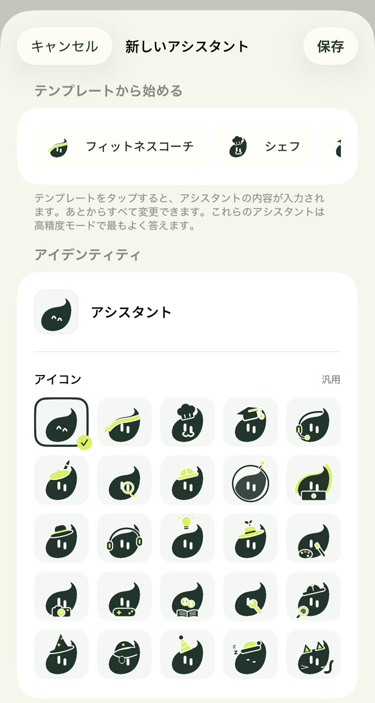
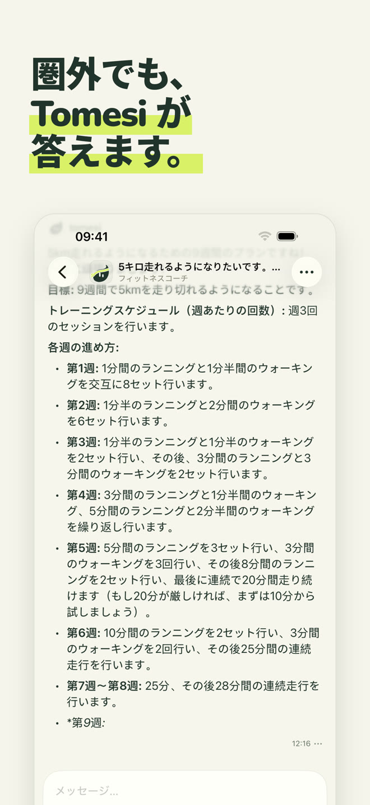
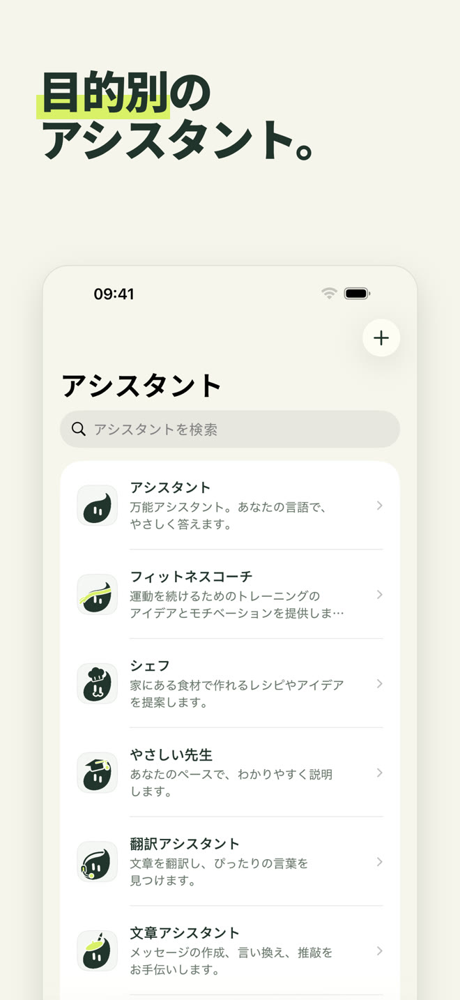
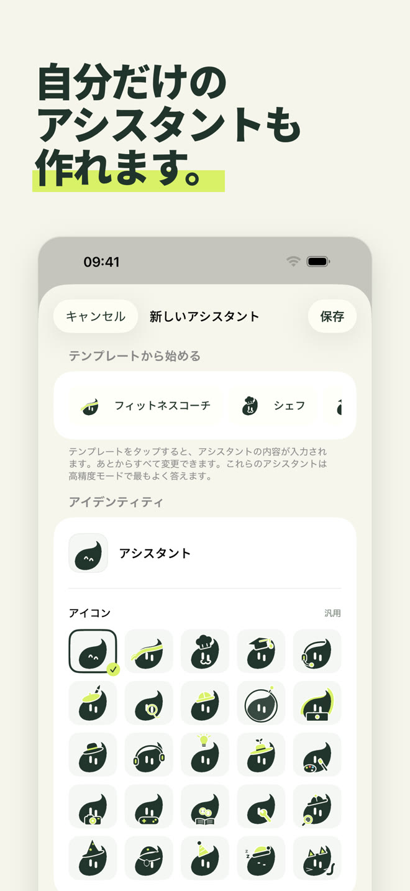
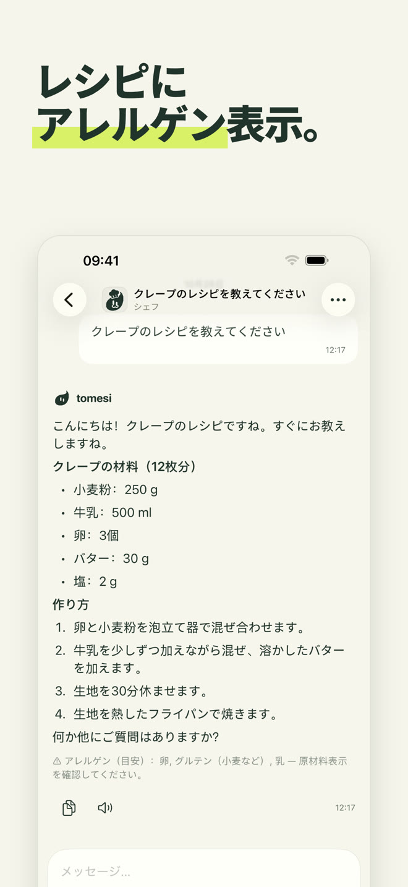
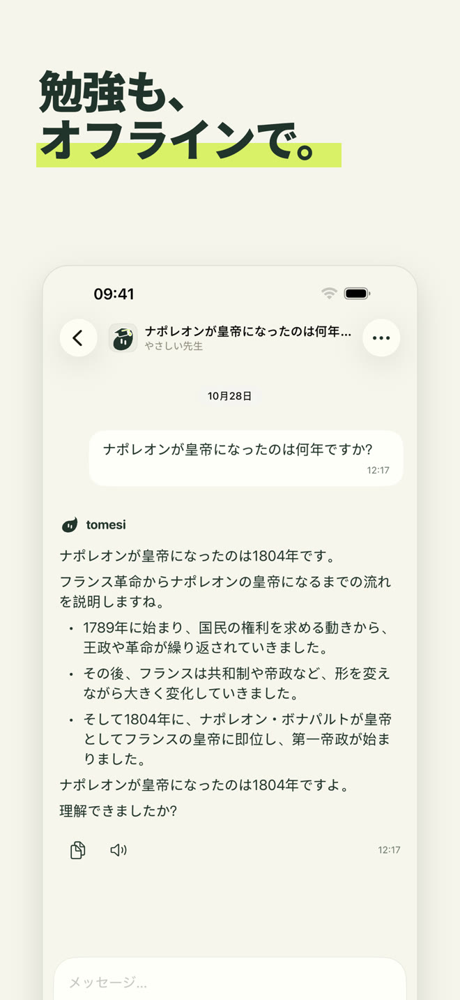
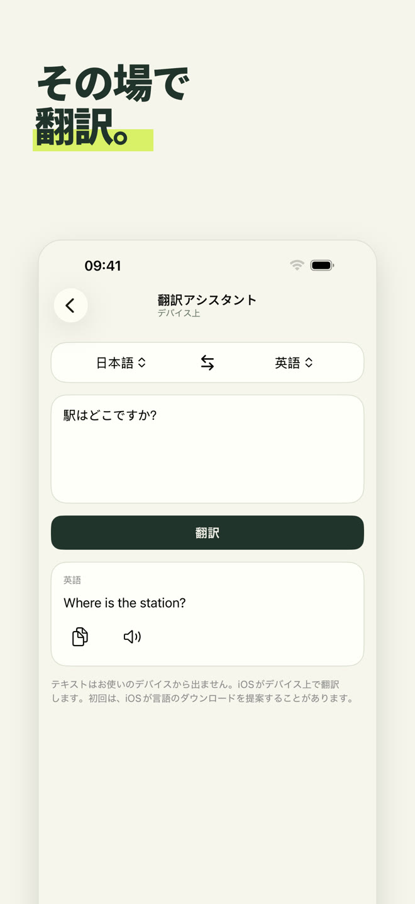
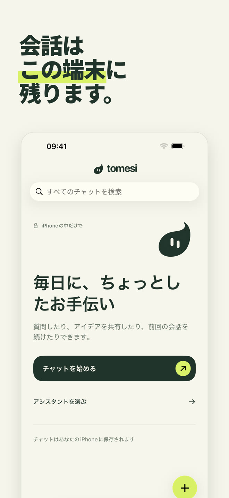

iPhone の中だけで動く AI アシスタント。機内でも、山の中でも、海外でも。あなたが書いた内容が端末の外に出ることはありません。
App Store でダウンロード買い切り · アカウント不要 · サブスクなし
アシスタントごとに役割と答え方があります。用途に合わせて選ぶか、万能アシスタントに話しかけてください。
万能タイプ。あなたの言語でやさしく答えます。
時間や道具に合わせたトレーニング、週ごとのプログラム。
手元の食材でかんたんレシピ。アレルゲンも表示します。
あなたのペースで一歩ずつ：数学、歴史、理科、文法。
13 言語の間で、その場で翻訳。
メール、メッセージ、手紙。誤字脱字もひとつずつ直します。
名前と性格、そして Tomesi の 25 種類のアイコンから一つを選ぶだけ。作ったアシスタントもアプリの資料を使って答えます。

小さなモデルはすべてを知っているわけではありません。Tomesi は確認済みの資料を内蔵し、答えるときにアシスタントへ渡します。
分量、手順、アレルゲンを、アプリが答えの下に表示します。
14 か国。さらに理科、地理、14 言語の文法の資料も。
65 の資料も：数週間のプログラム、回復、食事、スポーツ。
すべての AI と同じく、Tomesi も間違えることがあります。大切な情報は確認してください。







AI は iPhone にインストールされています。あなたが書いた内容がインターネットに送られたり、ほかの場所に保存されたりすることはありません。
登録もメールアドレスも広告もなく、データも集めません。
サーバー代がかからないので、サブスクはありません。アプリはあなたのものです。
オプションの「高精度」モードでは、より細やかな答えのために高性能なモデル（約 3 GB）をダウンロードします。
はい。アプリとアシスタントをインストールすれば、もうインターネットは必要ありません。AI はすべて iPhone の中で動きます。機内モードで確かめてみてください。
どこにも送られません。端末の中に残ります。Tomesi には会話サーバーもユーザーアカウントも広告もありません。詳しくはプライバシーポリシーをご覧ください。
ChatGPT はサーバー上で動くため、接続が必要で、会話はサーバーを経由します。Tomesi は iPhone の中で動きます。クラウドの巨大サービスほど物知りではありませんが、いつでも使えて、完全にプライベートで、サブスクもありません。
メモリ 8 GB の iPhone（iPhone 15 Pro 以降）と iOS 26 以降が必要です。空き容量は約 3 GB、オプションの高精度モードにはさらに 3 GB が必要です。
はい、すべての AI と同じです。アプリに内蔵のレシピ、年号、資料は確認済みでアシスタントに渡されるため間違いは大きく減りますが、大切な情報は必ず確認してください。
Tomesi は 13 言語に対応しています（日本語、英語、フランス語、ドイツ語、スペイン語、イタリア語、オランダ語、ポーランド語、ポルトガル語、韓国語、簡体字中国語、ロシア語…）。アシスタントはさらに多くの言語を理解して答えます。
はい。MonIA は Tomesi に名前が変わりました。購入済みの方は買い直す必要はありません。アップデートするだけで、会話もそのまま端末に残ります。